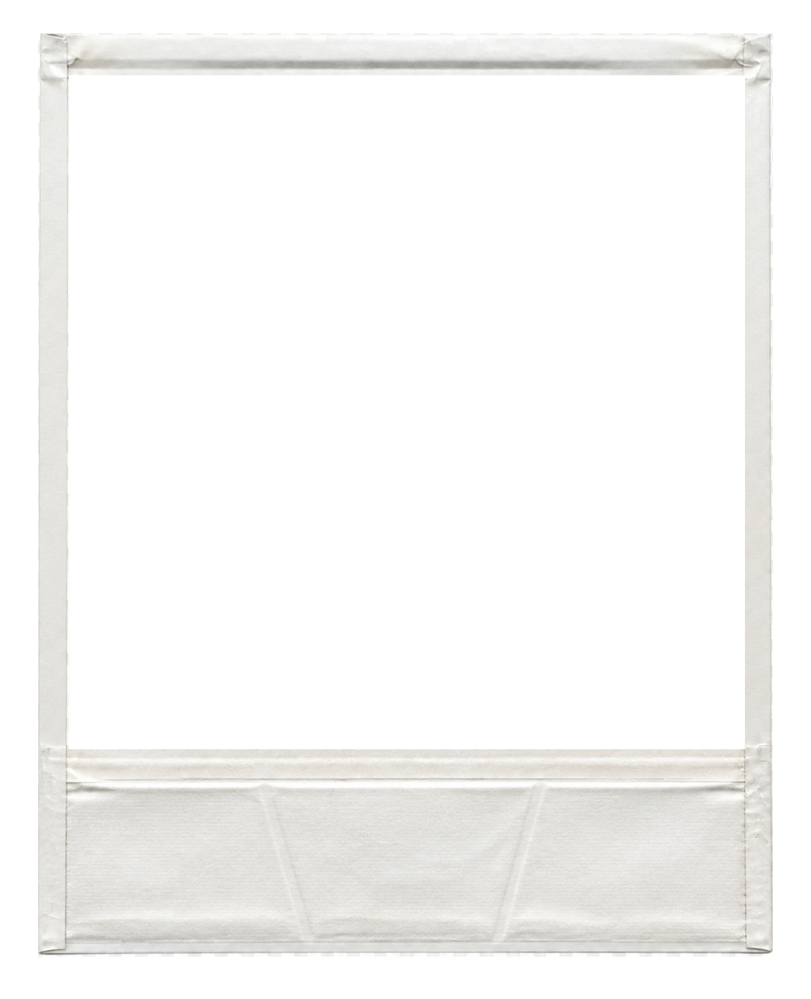
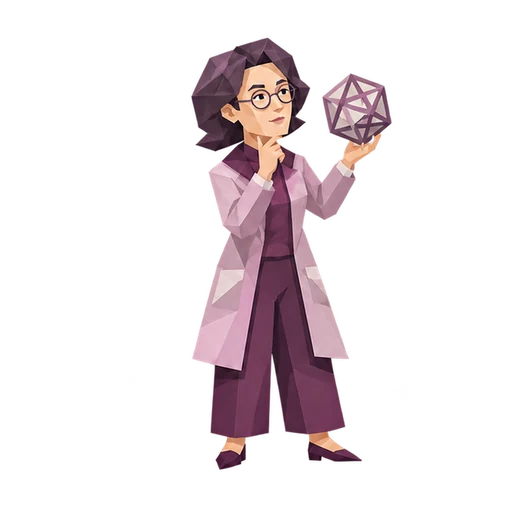
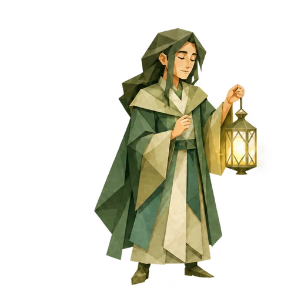
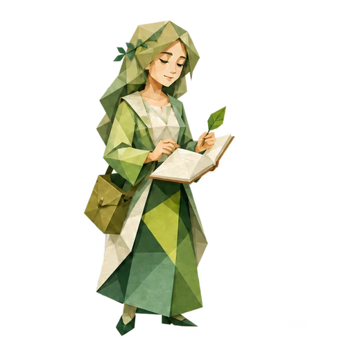
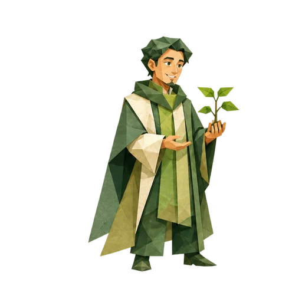
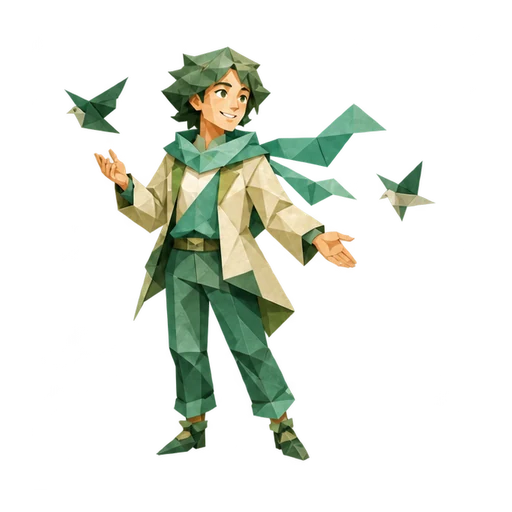
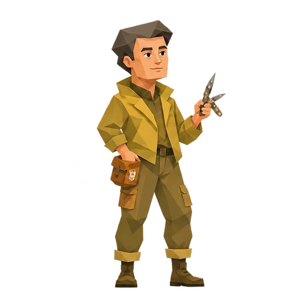
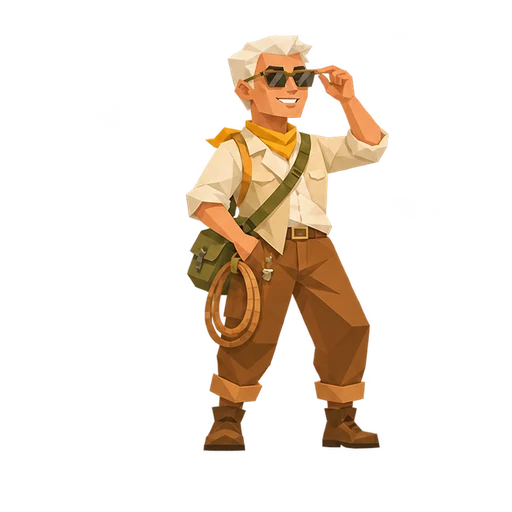

向内生长
拍下此刻的
人格快照
24 个日常情境，约 4 分钟。进度自动保存，接近中点时不强行归类。它不定义你，只帮你看见此刻的自己。

向内生长
24 个日常情境，约 4 分钟。进度自动保存，接近中点时不强行归类。它不定义你，只帮你看见此刻的自己。

关于体验
它记录的是你这次回答里的偏好，不是能力，更不是一生不变的定义。环境、关系和当下状态，都可能改变你呈现出来的样子。
24 个日常情境分别对应四组偏好，每组 6 题。答案会落在一条连续线上；接近中点时，结果会保留边界状态，不强行补齐类型。
这不是经过心理测量验证的专业量表，也不用于诊断、招聘、职业选择或重大人生决策。
作答说明
24 个日常情境，没有标准答案。按大多数时候的反应选择，不必猜哪一项看起来更好。
拿不准时可以选「看情况」。它会被当作中间答案，不需要为了得到一个确定类型反复推敲。
逐题答案不会上传。未完成进度和上次结果会保存在当前浏览器，你可以随时清除。
别人显影后的样子
每一种人格都拥有自己的光，也有需要慢慢看见的阴影。选择一张照片，读一段不急于下结论的描述。
从复杂中看见结构，也愿意为长远目标铺出一条清晰的路。
NT · 思辨者
喜欢拆开习以为常的答案，追问它为何成立，又能否有另一种解释。
NT · 思辨者善于把远大的目标转译为方向、次序，以及有推进力的行动。
NT · 思辨者在观点碰撞里发现可能，也乐于把旧问题重新命名。
NT · 思辨者
能感知未说出口的需要，也在意一件事更长远的意义。
NF · 共情者
以内在价值辨认方向，用想象力保存生活尚未展开的可能。
NF · 共情者
善于看见他人的潜力，并把一群人带向共同相信的方向。
NF · 共情者
总能在人和世界之间，看见尚未被打开的新可能。
NF · 共情者用责任、事实与清晰标准，让事情长期可靠地运转。
SJ · 守序者记得那些微小而重要的细节，把关心安静地放进日常行动。
SJ · 守序者把规则、责任与资源放在合适的位置，让目标有序发生。
SJ · 守序者通过及时的关照与共同仪式，让身边的人感到归属。
SJ · 守序者
冷静看清事物如何运作，再用精准行动解决眼前问题。
SP · 体验者敏锐感受当下细节，让价值与审美成为可触摸的表达。
SP · 体验者
迅速发现现实中的机会，并在行动反馈中不断调整方向。
SP · 体验者用真切热情回应当下，让共同的时刻更有生命力。
SP · 体验者没有哪一种人格更好。不同，只是我们抵达真实的不同路径。
显影之后
比起记住四个字母，更重要的是看见它们如何出现在你的关系、情绪与日常选择里。
下一次拍照前